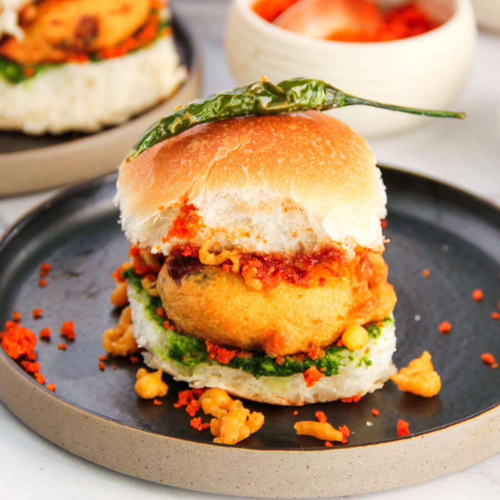

Home
Vada-pav

Description:
The above image shows a classic Vada Pav, the ultimate local street food snack from
Mumbai.
It features a golden, deep-fried spiced potato dumpling (vada) tucked inside a soft, sliced
bread roll (pav).
The pav is layered with a vibrant green chutney and a bold red garlic masala for a sharp, spicy
kick.
It is served with a fried green chili on top and extra crispy bits of chickpea flour batter scattered around for
added texture.
Ingredients:
- Potato
- Chickpea Flour
- Green Chilies
- Garlic
- Ginger
- Mustard Seeds
- Turmeric
- Coriander
- Cumin
- Asafoetida
Steps:
- Boil Potatoes Cook and mash the potatoes to prepare the vada base.
- Temper Spices: Saute mustard seeds, asafoetida, ginger, garlic, and green chilies.
- Mix Filling: Combine the tempered spices with mashed potatoes, turmeric, and fresh
coriander.
- Prepare Batter: Whisk chickpea flour with turmeric, salt, and water to a thick
consistency.
- Shape and Fry: Form potato balls, dip them in the batter, and deep-fry until golden.
- Prepare Pav: Slice the bread rolls and spread green chutney and red garlic masala
inside.
- Assemble: Place the fried vada inside the pav and add crispy batter bits.
- Serve: Garnish with a fried green chili on top.